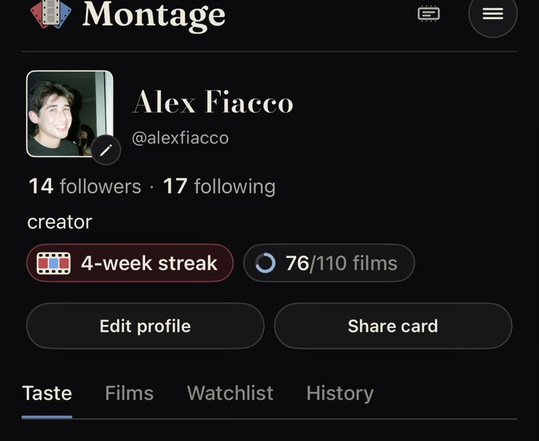

Profile header v3
v2 option 1 again with your notes: the cream outline on the photo stays, the streak and the film goal stay in the header, the archetype is plain sans in the credits line, and someone's Blend is one short row.
Your own profile
Now: your screenshot from Nov 4. The dashed outline marks the streak and goal (not in the app).
Now

A · Pills under the bio, no "since"

Alex Fiacco
1,260Films
14Followers
17Following
@alexfiacco · Nihilist
founder of Montage. got tired of searching for something to watch, so I built this 🍿
4-week streak76/110 films
Share your cardEdit
TasteFilmsWatchlistHistory
Streak and goal keep today's place under the bio, as two matching 28pt pills; the icons carry the colour.
A · with "since 2024"
Alex Fiacco
1,260Films
14Followers
17Following
@alexfiacco · Since 2024 · Nihilist
founder of Montage. got tired of searching for something to watch, so I built this 🍿
4-week streak76/110 films
Share your cardEdit
TasteFilmsWatchlistHistory
Same as A with "Since 2024" in the credits line. Three facts in one line starts to read like a form.
B · One quiet line, no pills
Alex Fiacco
1,260Films
14Followers
17Following
@alexfiacco · Nihilist
founder of Montage. got tired of searching for something to watch, so I built this 🍿
4-week streak76/110 films this year
Share your cardEdit
TasteFilmsWatchlistHistory
The same two facts as text with their icons, no boxes. Each still taps. Calmer, but easier to miss.
Someone else's profile
Now: Jacob's page. The Blend becomes one 44pt row: "95% Blend with you · See breakdown ›".
Now

A · Pills
J
Jacob Fiacco
677Films
3Followers
2Following
@jacobfiacco · Animation Devotee
2-week streak41/60 films
Follow
95%Blend with youSee breakdown›
TasteFilmsHistory
B · Quiet line
J
Jacob Fiacco
677Films
3Followers
2Following
@jacobfiacco · Animation Devotee
2-week streak41/60 films this year
Follow
95%Blend with youSee breakdown›
TasteFilmsHistory
Decide
- A, pills under the bio, without "since". Streak and goal stay where people know them, tidied into one matching pair, and the credits line keeps only the handle and the archetype.
- B, one quiet line, if the streak and goal should step back further than the figures.